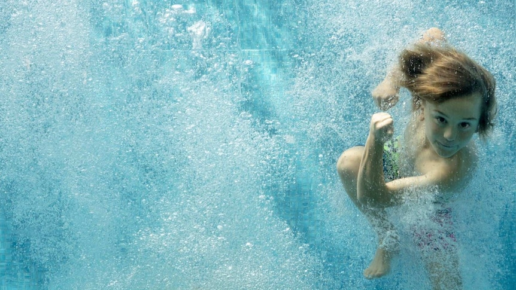

The Pool - A Must Watch Documentary on ABC's iView
Pools are a defining part of our national identity. Evoking deep nostalgia and childhood memories, this two-part documentary takes a look at the Australian identity through the prism of the pool...
By the ABC